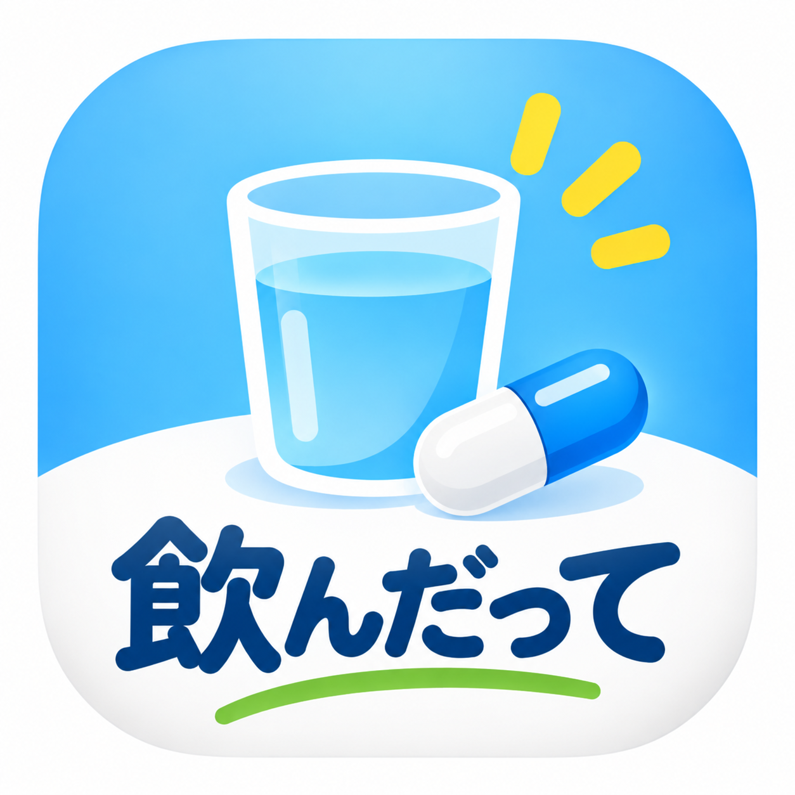

飲んだって
服薬したことを、かんたんに記録するためのアプリです。
通知について
設定した時刻は、普段お薬を飲む「服薬予定時刻」です。
服薬予定時刻から3分以内に「飲んだ」と記録した場合、確認通知は届きません。まだ記録されていない場合は、服薬予定時刻の3分後に確認通知を行います。
追加通知を有効にしている場合は、その後も記録がないときに確認通知を行います。記録すると、その服薬区分の残りの通知は停止します。
この通知は服薬を指示するものではなく、飲み忘れや記録忘れを防ぐための補助機能です。服薬方法・服薬時刻については、医師・薬剤師などから受けた指示に従ってください。
基本的な使い方
朝・昼・夜・寝る前から必要な服薬区分を設定し、薬を飲んだらアプリで記録します。記録は「薬を飲んだかどうか」を後から確認するために利用できます。
サポート
不具合やご質問は、App Storeに掲載されているサポート窓口からお問い合わせください。
プライバシー
服薬記録は端末内で管理され、7日間保持されます。詳しくはプライバシーポリシーをご確認ください。